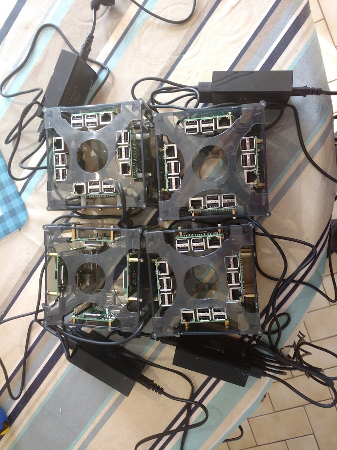

by Olivier Barais docker swarm go-docker raspberry pi
Posted 2016.03.24 — Rennes, FranceLightweight containers technologies such as Docker are more and more adopted for deploying and managing micro-services architectures. Indeed, they hide a part of the complexity resulting from the language heterogeneity and the large choice of existing implementation frameworks that can be used to implement modern applications. Containers provide those benefits without introducing the general cost of the virtualization.
It exists lots of open-source configuration managers such as kubernetes, nomad, apache Mesos, or docker swarm to define and keep a standard modular applications in a consistent state and to dispatch its services on a cluster of remote nodes. Tools such as Go-Docker would complement these stacks to provide a batch computing/cluster management tool using Docker as execution/isolation system. It can be seen like Sun Grid Engine/Torque/.
Go-Docker acts as an additional layer above those tools on multiple user systems where users do not have Docker priviledges or knowledge.
In this blog post, I will present some experiments to run Go-Docker on top of a cluster of raspberry pi.

Your need at least two raspberry PI and a router connected to Internet. I use one linksys WRT 54GL to connect to Internet and a 1Gb switch to connect my 16 Raspberry PI. The router provides a DHCP server for providing IP to my cluster.
Hypriot and cluster-lab provide solutions to easily deploy your swarm on top of a raspberry pi.
First download the last image of a rspbian with a pre-install docker. - Hypriot Docker Image for Raspberry Pi
Get the flash tooling.
flash --hostname swarm-dc1-pi01 hypriot-rpi-20160306-192317.img.zip
flash --hostname swarm-dc1-pi02 hypriot-rpi-20160306-192317.img.zip
...
flash --hostname swarm-dc2-pi04 hypriot-rpi-20160306-192317.img.zip
Start your first Raspberry Pi. You can log in using ssh. The password is "hypriot".
function getip() { (traceroute $1 2>&1 | head -n 1 | cut -d\( -f 2 | cut -d\) -f 1) }
IP_ADDRESS=$(getip swarm-dc1-pi01.local)
ssh root@$IP_ADDRESS
If the date of your raspberry pi is not up to date, your provider probably reject the ntp query.
You can test with another ntp server.
> service ntp stop
> ntpdate ntp.inria.fr
When you find an ntp server which is available from your Internet provider, Update your /etc/default/ntpdate file.
> nano -w /etc/default/ntpdate # add your ntp server to the list
> service ntp stop
## Step 1.4: Check your Internet connection.
> ping 8.8.8.8
apt-get update && apt-get -y upgrade && apt-get install hypriot-cluster-lab -y
Next you can configure, your cluster lab.
nano -w /etc/cluster-lab/cluster.conf
#In my case, I Remove vlan, dhcp and set the Ip of the master node currently the IP of the first raspberry pi node. Indeed, my router provides a DHCP server for the cluster.
Start your cluster lab.
service cluster-lab start
systemctl enable cluster-lab
function getip() { (traceroute $1 2>&1 | head -n 1 | cut -d\( -f 2 | cut -d\) -f 1) }
IP_ADDRESS=$(getip swarm-dc1-pi01.local)
docker -H $IP_ADDRESS:2378 info
docker -H $IP_ADDRESS:2378 run hypriot/armhf-hello-world
echo $IP_ADDRESS:2378
http://{IP or hostname of the master node}:8500 # Consul UI
docker -H $IP_ADDRESS:2378 run -d -p 9000:9000 --env="constraint:node==swarm-dc1-pi01" --name dockerui hypriot/rpi-dockerui -e http://$IP_ADDRESS:2378
Go there to play with docker UI
http://{IP or hostname of the master node}:9000 # Docker UI.
For each raspberry pi. Do not forget to configure correctly your cluster lab.
nano -w /etc/cluster-lab/cluster.conf
#In my case, I Remove vlan, dhcp and set the Ip of the master node currently the IP of the first raspberry pi node. Indeed, my router provides a DHCP server for the cluster.
At the end, from your laptop you can check the docker swarm configuration. You can see the number of CPU that increase. You can also
docker -H $IP_ADDRESS:2378 run -d -p 9000:9000 --env="constraint:node==swarm-dc1-pi01" --name dockerui hypriot/rpi-dockerui -e http://$IP_ADDRESS:2378
Go there to play with docker UI
http://{IP or hostname of the master node}:8500 # Consul UI
http://{IP or hostname of the master node}:9000 # Docker UI.
FROM resin/rpi-raspbian:wheezy
MAINTAINER Olivier Barais <barais@irisa.fr>
LABEL status="Dockerfile in development"
LABEL description="Udpcast on top od alpine"
WORKDIR /
ENV admin="root"
RUN apt-get update && \
apt-get -y upgrade && \
apt-get install -y udpcast && \
rm -rf /var/cache/apt/*.deb*
CMD ["/usr/bin/udp-sender"]
FROM resin/rpi-raspbian:wheezy
MAINTAINER Olivier Sallou <olivier.sallou@irisa.fr>
LABEL status="Dockerfile in development"
LABEL description="Batch scheduling system in containers. This image contains \
all godocker components: web, scheduler and watchers. \
Config should be overriden in /opt/godocker/go-d.ini \
file. Default configuration does not provide mail and only fake \
authentication."
EXPOSE 6543
WORKDIR /opt/go-docker
ENV admin="root"
ENV swarm_url="tcp://god-swarm:2375"
RUN apt-get update
RUN apt-get install -y git python-dev libldap2-dev gcc libsasl2-dev
RUN apt-get install -y python-setuptools apt-transport-https wget
RUN apt-get install -y openssl libffi-dev libssl-dev ca-certificates
RUN cd /opt && git clone https://bitbucket.org/osallou/go-docker.git
RUN rm -f /opt/go-docker/plugins/mesos.*
RUN cd /opt && git clone https://bitbucket.org/osallou/go-docker-web.git
RUN easy_install pip
RUN cd /opt/go-docker && pip install -r requirements.txt
RUN cd /opt/go-docker && python setup.py develop
RUN cd /opt/go-docker-web && pip install -r requirements.txt
RUN cd /opt/go-docker-web && python setup.py develop
RUN pip install godocker_cli
RUN cd /opt/go-docker-web && cp production.ini.example production.ini
RUN cd /opt/go-docker-web && sed -i 's;global_properties =.*;global_properties = /opt/go-docker/go-d.ini;g' production.ini
RUN cd /opt/go-docker-web && sed -i 's;admin =.*;admin = '${admin}';g' production.ini
RUN cd /opt/go-docker && cp go-d.ini.sample go-d.ini
RUN cd /opt/go-docker && sed -i "s;plugins_dir:.*;plugins_dir: '/opt/go-docker/plugins';g" go-d.ini
RUN cd /opt/go-docker && sed -i "s;shared_dir:.*;shared_dir: '/opt/godshared';g" go-d.ini
RUN cd /opt/go-docker && sed -i "s;mongo_url:.*;mongo_url:'mongodb://god-mongo:27017';g" go-d.ini
RUN cd /opt/go-docker && sed -i "s;redis_host:.*;redis_host:'god-redis';g" go-d.ini
RUN cd /opt/go-docker && sed -i "s;influxdb_host:.*;influxdb_host: None;g" go-d.ini
RUN cd /opt/go-docker && sed -i "s;prometheus_exporter:.*;prometheus_exporter: 'god-web:6543';g" go-d.ini
RUN cd /opt/go-docker && sed -i "s;docker_url:.*;docker_url: '"${swarm_url}"';g" go-d.ini
RUN mkdir -p /var/log/go-docker
Mongodb and Redis are required. Either install them on a server, or get them in containers:
function getip() { (traceroute $1 2>&1 | head -n 1 | cut -d\( -f 2 | cut -d\) -f 1) }
IP_ADDRESS=$(getip swarm-dc1-pi01.local)
docker -H $IP_ADDRESS:2378 rm god-mongo god-redis god-web
docker -H $IP_ADDRESS:2378 run --env="constraint:node==swarm-dc1-pi01" --name god-mongo -d rgreschner/rpi-raspbian-mongodb
docker -H $IP_ADDRESS:2378 run --env="constraint:node==swarm-dc1-pi01" --name god-redis -d hypriot/rpi-redis
Run the web server, interface is reachable at http://localhost:6543
Get the following config file
Warning: data shared directory (here /opt/godshared) must match on host AND container as final job will end in a host container needing the same volume directory. shared_dir parameter in go-d.ini configuration file must be changed accordingly.
ssh root@$IP_ADDRESS
mkdir /opt/godshared
mkdir /tmp/vid
exit
docker -H $IP_ADDRESS:2378 run \
--rm \
--env="constraint:node==swarm-dc1-pi01"\
--name god-web
--link god-mongo:god-mongo \
--link god-redis:god-redis \
-v /opt/godshared:/opt/godshared \
-v path_to/go-d.ini:/opt/go-docker/go-d.ini \
-v path_to/production.ini:/opt/go-docker-web/production.ini \
-p 6543:6543 \
-e "PYRAMID_ENV=prod" \
barais/go-docker-rpi \
gunicorn -p godweb.pid --log-config=/opt/go-docker-web/production.ini --paste /opt/go-docker-web/production.ini
The first time only, you must initialize db etc...
docker -H $IP_ADDRESS:2378 run \
--link god-mongo:god-mongo \
--link god-redis:god-redis \
-v /opt/godshared:/opt/godshared \
-v path_to/go-d.ini:/opt/go-docker/go-d.ini \
-e GOD_CONFIG=/opt/go-docker/go-d.ini\
--rm \
--env="constraint:node==swarm-dc1-pi01" \
barais/go-docker-rpi \
/usr/bin/python /opt/go-docker/go-d-scheduler.py init
Run one scheduler
docker -H $IP_ADDRESS:2378 run \
--rm \
--link god-mongo:god-mongo \
--link god-redis:god-redis \
--link god-web:god-web \
-v /opt/godshared:/opt/godshared \
-v path_to/go-d.ini:/opt/go-docker/go-d.ini \
-e GOD_CONFIG=/opt/go-docker/go-d.ini\
--env="constraint:node==swarm-dc1-pi01" \
barais/go-docker-rpi \
/usr/bin/python /opt/go-docker/go-d-scheduler.py run
Run one or many watchers (1 is enough test or medium size production)
docker -H $IP_ADDRESS:2378 run \
--rm \
--link god-mongo:god-mongo \
--link god-redis:god-redis \
--link god-web:god-web \
-v /opt/godshared:/opt/godshared \
-v path_to/go-d.ini:/opt/go-docker/go-d.ini \
-e GOD_CONFIG=/opt/go-docker/go-d.ini\
--env="constraint:node==swarm-dc1-pi01" \
barais/go-docker-rpi \
/usr/bin/python /opt/go-docker/go-d-watcher.py run
you can now go to http://$IP_ADDRESS:6543/
login: godocker pass: admin
FROM resin/rpi-raspbian:wheezy
MAINTAINER Olivier Barais <barais@irisa.fr>
LABEL status="Dockerfile in development"
LABEL description="gstreamer with hardware access"
WORKDIR /
ENV admin="root"
RUN apt-get update && \
apt-get -y upgrade && \
apt-get install gstreamer1.0-tools gstreamer1.0-omx -y && \
apt-get install gstreamer1.0-libav gstreamer1.0-fluendo-mp3 gstreamer1.0-plugins-bad gstreamer1.0-plugins-ugly gstreamer1.0-plugins-good gstreamer1.0-plugins-base -y && \
rm -rf /var/cache/apt/*.deb*
CMD ["gst-launch-1.0 -e filesrc location=$input.mp4 ! decodebin name=demux ! queue ! audioconvert ! audio/x-raw ! audiorate ! avenc_ac3 bitrate=320000 ! mux. mpegtsmux name=mux ! filesink location=\"$output.h264\" demux. ! queue ! videoconvert ! deinterlace ! omxh264enc target-bitrate=2000000 control-rate=1 ! \"video/x-h264,profile=high\" ! h264parse ! mux."]
https://docs.docker.com/engine/reference/run/#runtime-privilege-and-linux-capabilities
Sorry, no comments enabled for now because I'm using a simple static site generator (maybe I'll try out disqus another day).
But if you like what you see, send me an email.